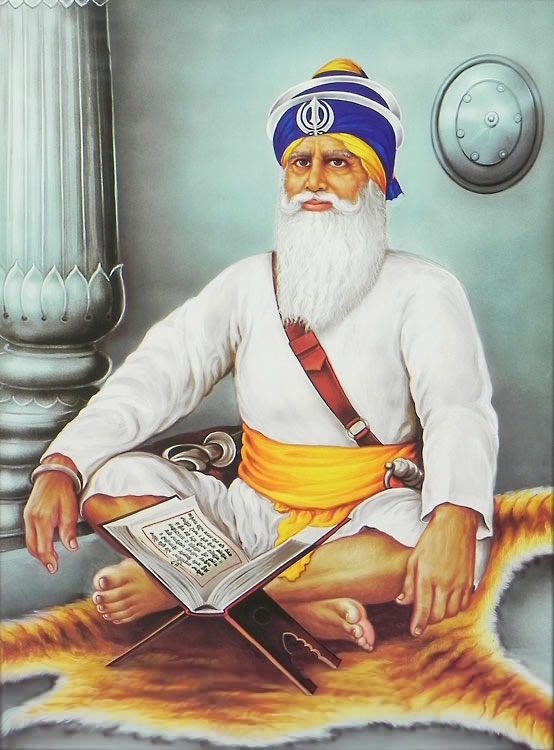
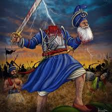
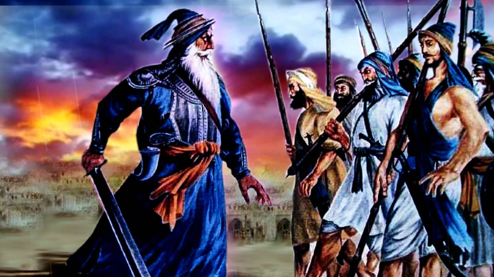

Who Was Baba Deep Singh Ji?
Baba Deep Singh Ji (1682–1757) was a revered Sikh warrior and scholar who sacrificed his life defending the Harmandir Sahib (Golden Temple) against Afghan invaders. He is remembered for his unmatched bravery and spiritual devotion.

Early Life & Education
He met Guru Gobind Singh Ji at the age of 12 in Anandpur Sahib. He was trained in Gurmukhi, Sikh scriptures, and martial arts. He helped scribe copies of Guru Granth Sahib and was appointed the head of Damdami Taksal.
Training & Knowledge
From Bhai Mani Singh Ji Baba Ji began learning reading and writing Gurmukhi and santhiyaa (exegesis) of Gurbaani. As well as Gurmukhi he learnt several other languages. Guru Gobind Singh Ji also taught him horseback riding, hunting and Shastar-vidiyaa (weaponry).
At the age of 18, on the Vaisakhi of 1700, he received the blessing of Khande-di-pahul (Amrit) from the Guru-roop Panj Piyaare. As an Amritdhari Sikh, Baba Deep Singh Ji took an oath to serve in Akaal Purakh’s Fauj (the Almighty’s army) and that following the way of the Khalsa one is to always help the weak and needy, and to fight for truth and justice.
Baba Deep Singh Ji soon became one of Guru Gobind Singh Ji’s most beloved Sikhs.

Return Back Home
Baba Deep Singh Ji stayed in Guru Gobind Singh Ji’s service for about 8 years. At Guru Ji’s request, he returned to his village to help his parents and he got married. Guru Gobind Singh Ji met Baba Deep Singh Ji at Takht Sri Damdama Sahib, Talwandi Sabo in 1705. Here, he learned that two of the Guru’ sons, Baba Ajit Singh Ji and Baba Jujhar Singh Ji, had become Shaheed (martyred) in the battle of Chamkaur Sahib.
Guru Ji also told him that his two younger sons, Baba Zorawar Singh Ji and Baba Fateh Singh Ji, were cold-heartedly bricked alive and attained Shaheedi (martyrdom) at Sirhind under the orders of the governor Wazir Khan.
Sent to Damdama Sahib
In 1706, Guru Gobind Singh Ji placed Baba Deep Singh Ji in charge at Sri Damdama Sahib, while Bhai Mani Singh Ji was made Head Granthi of Sri Harmander Sahib in Amritsar. After Guru Sahib left for Delhi, he took up the duty of preparing copies of Sri Guru Granth Sahib Ji and carried on the sewa blessed by Guru Gobind Singh Ji of managing this Sikh Centre.
‘Taksaal’ means a minting factory. Sri Damdama Sahib, had become a factory where Sikhs would come to mint and prepare their shastars (weapons), as well as mint their minds and enshrine Gurbaani within their hearts through learning the correct pronunciation and grammar of reading Sri Guru Granth Sahib Ji. As a result this centre of education and weaponry was known as ‘Damdami Taksaal’.
The Khalsa Delivers Justice
Baba Deep Singh Ji spent many years at Sri Damdama Sahib preaching Sikh values and teachings and doing sevaa of the Sangat. He was always ready to serve those in need and to fight for justice.
In 1709, Baba Ji joined Baba Banda Singh Ji Bahadar in punishing the tyrants of Sadhaura and Sirhind. In 1733 Nawab Kapoor Singh Ji, the commander of the Khalsa forces, appointed Baba Ji as the leader of one of the jathas (groups) of Dal Khalsa.
On Vaisakhi day of 1748, when Dal Khalsa was reorganised into twelve misls, he was entrusted with the leadership of Shaheedaa(n) di Misl.
News of Sacrilege at Amritsar
In April 1757, Ahmed Shah Abdali’s army desecrated Gurdwaré and filled sarovars with debris and alcohol. Baba Deep Singh Ji, upon hearing this beadbi, told the Sangat, “Diwali will be celebrated at Amritsar this year.”
He performed an Ardaas: “May my head fall at Sri Harmandar Sahib.”
Baba Ji Leaves for Amritsar
At age 75, Baba Ji led thousands of Singhs toward Amritsar. Near Taran Taaran, he drew a line with his Khanda and asked only those ready to die for the Guru to cross. They all crossed.
Clash with the Mughals
A fierce battle occurred near Gohalwarh. Baba Ji’s head was severed in combat by Attal Khan. Reminded of his Ardaas, Baba Ji held his head in one hand and continued fighting with his 14kg sword until he reached Sri Harmandar Sahib, where he attained martyrdom.
Baba Ji Lays to Rest at Harmandir Sahib
The Diwali of 1757 was celebrated at Sri Harmandar Sahib. The spot where his head fell is still marked and revered by Sikhs, reminding all of the ultimate sacrifice made for the faith.
Connection to the Ten Sikh Gurus
-
Guru Nanak Dev Ji: Followed teachings of truth and equality
-
Guru Angad Dev Ji: Learned Gurmukhi script and spread it
-
Guru Amar Das Ji: Embodied selfless service (seva)
-
Guru Ram Das Ji: Defended Harmandir Sahib (founded by this Guru)
-
Guru Arjan Dev Ji: Helped preserve Guru Granth Sahib, embraced martyrdom
-
Guru Hargobind Ji: Lived the Miri-Piri (saint-soldier) ideal
-
Guru Har Rai Ji & Guru Har Krishan Ji: Showed humility and courage
-
Guru Tegh Bahadur Ji: Stood against tyranny and protected religious rights
-
Guru Gobind Singh Ji: Most direct connection; became Khalsa, led warriors

Legacy
Baba Deep Singh Ji is a symbol of courage, sacrifice, and spiritual devotion. He founded the Shaheed Misl and died in the battlefield upholding Sikh values. His legendary final battle, where he fought with his head nearly severed, remains an iconic story of martyrdom.
💎 SHAHEEDI DIWAS OF BABA DEEP SINGH JI 💎
💎 Nanakshahi Calendar -13 Maghar (ਨਾਨਕਸ਼ਾਹੀ ੧੩ ਮੱਘਰ) 💎
(1682 – 1757)
A venerable and revered sikh Baba Deep Singh ji was known as a great warrior taking part in many battles and ultimately gave their life in the battle of Amritsar defending Sri Harmandir Sahib from attack in 1757. Baba Deep Singh ji was also a deep and spiritual theologist . Baba Deep Singh Ji (1682–1757) were born in 1682.
Born to devout Sikh parents Bhai Bhagta ji and Bibi Jioni at the town of Pahuwind Amritsar, Baba Deep Singh Ji were born at the time when Guru Gobind Singh Ji (1666-1708) reigned as Sikhs 10th Guru.
During their young childhood Baba Deep Singh Ji and their parents were regular visitors to Sri Harmandir Sahib .
At the Age of 18 in 1699 Baba Deep Singh Ji visited Takht Sri Kesgarh Sahib Anandpur Sahib were they joined the Khalsa. They stayed at Anandpur Sahib for 3 months . Baba Deep Singh ji parents requested permission to leave from Guru Gobind Singh Ji .
Maharaj insisted it was right for them to leave but they should leave Baba Deep Singh Ji at Anandpur Sahib. Over the next 3 years Baba Deep Singh ji learnt Gurmukhi Hindi Punjabi Sanskrit and undertook training in spiritual warfare.
Baba Deep Singh Ji left Anandpur Sahib and returned to their birth town of Pahuwind.
In 1705 after the Battle fo Anandpur and the shaheedi of Guru Gobind Singh Ji’s mother and 4 sons Guru Gobind Singh Ji Bhai Mani Singh and Baba Deep Singh met at Takht Damdama Sahib .
Guru Gobind Singh wished to complete the Guru Granth Sahib but the present edition was with Dhirmal family . Guru Gobind Singh ji from memory narrated the Guru Granth Sahib ji at Damdama Sahib whilst Bhai Mani singh scribed the text and Baba Deep Singh ji provided all the necessary materials .
Guru Gobind Singh ji before leaving Damdama Sahib gave Santhiya to Bhai Mani Singh & Baba Deep Singh and instructed them to continue sikhisms teachings.
Baba Deep Singh then went to Anandpur sahib to do katha.
On their return to Damdama Sahib Baba Deep Singh for many months wrote 4 complete saroops of Guru Granth Sahib ji . These were then send to the 4 Takhts ….Sri Akaal Takht Sri Kesgarh Sahib Patna Sahib and Hazoori Sahib . Historical records also state a 5th saroop was wrote by Baba Deep Singh in Farsi. Baba Deep Singh Ji was the first jathedar of Damdami Taksal and head granthi of Damdama Sahib.
In 1708 Dhan Guru Gobind Singh Ji left this world at Takht Sachkhand Sri Hazur Abchalnagar Sahib
In 1757 Sri Darbar Sahib had come under attack . The sarovar was threatened to be emptied and filled ....Baba Deep Singh Ji with a group of 8 sikhs went to liberate Sri Darbar Sahib from the invaders .
Baba Deep Singh at the age 75 met first at Taran Taran Sahib . Here 5000 Sikhs had gathered and travelled with Baba Deep Singh to Sri Darbar Sahib .
Here the battle assumed Baba Deep Singh engaged with a young invader..... both took strike and simultaneously their heads severed . Baba Deep Singh continued fighting with their head on their hand . It was Baba Deep Singh ji profound wish to reach Sri Darbar Sahib and offer his sis (head) to Guru Ram Das ji maharaj .
Baba Deep Singh Ji final resting place occurred on the boundary of the sarovar at Sri Darbar Sahib. Baba Deep Singh ji at the age of 75 gained martydoom and an enduring legacy .
During their youth they study and practised Gurbani and in their advanced age of 75 years defended the abode of god .
The ultimate sacrifice the ultimate offering their sis gifted to Guru Ram Das Ji (1534-1581).